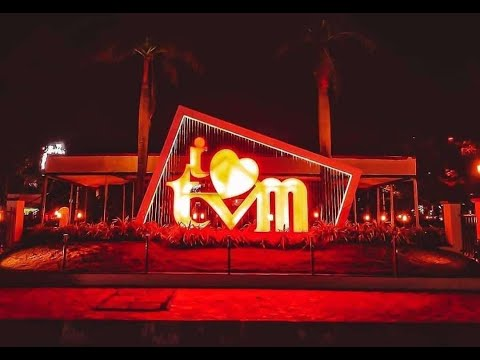

1 / 3
.jpg)
Trivandrum
2 / 3

3 / 3
.jpg)
Year of formation : 1949, July 1 Main rivers : Neyyar, Karamana Vamanapuram The most densely populated district in Kerala The southernmost place in Kerala Kaliyikkavila, the southernmost Panchayat Parassala, Southernmost constituency Parassala and the southern most river Neyyar, are in Trivandrum District. The National Highway that passes through the Capital City of Kerala : NH 47 (New name NH 66) The first university in Kerala - the Kerala University (formerly known as Travancore University founded in 1937), the first Medical College (1951) and the first Engineering College in Kerala - College of Engineering (1939), all are in Trivandrum. The second stock exchange of Kerala is at Trivandrum. First open jail in Kerala is at Nettukalthery (Kattakada) First women jail in Kerala is at Neyyattinkara. Now it is transferred to Thiruvananthapuram. Poojappura Central Prison is the biggest in Kerala. The first fully computerised Panchayat in Kerala is Vellanad in Trivandrum District. The first 'child friendly' Panchayat in Kerala is Venganoor in Trivandrum District. The second highest peak in Kerala - Agasthyakudam Peak (1869 m) is also in Trivandrum District. This is also the southernmost peak in Western Ghats. Peppara and Neyyar are the two wildlife sanctuaries in the district